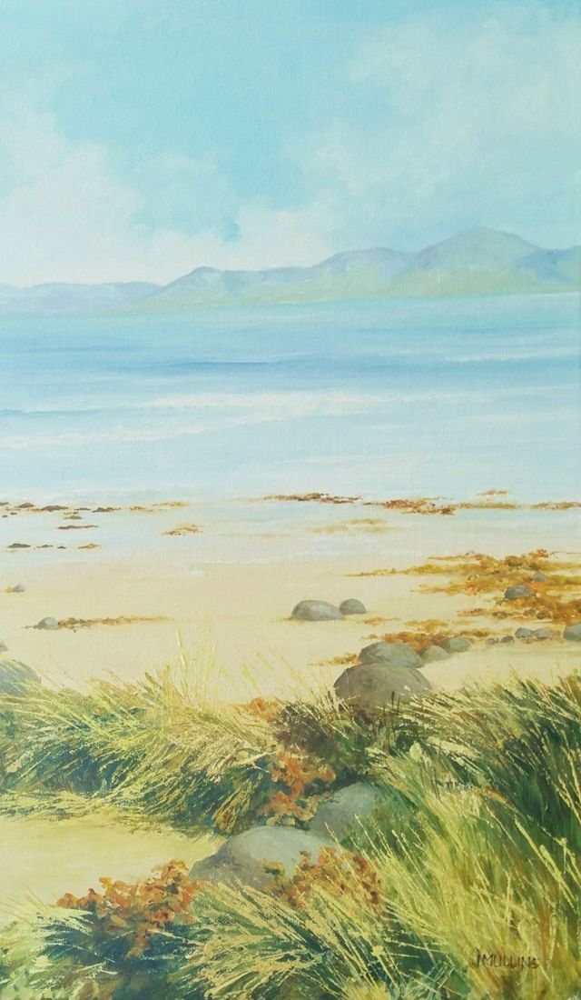

Beach in Kerry, Ireland
No. 38- Medium
- Oil on canvas board
- Size
- 45 × 28 cm
- Year
- 2018
- Inspired by
- Kerry, Ireland
- Price
- £250
The windswept beach, with the misty land across the bay, inspired me to paint the contrast between the cool colours of the land and the vibrancy of seaweed and dead grass on the beach.
Ask about this paintingOr email enquiries@joanmullinsart.co.uk, quoting No. 38. UK only. Collection from Nantwich is free; UK postage is quoted when you enquire.


 Thurstaston Beach at Sunset
Thurstaston Beach at Sunset West Kirby reedbeds
West Kirby reedbeds